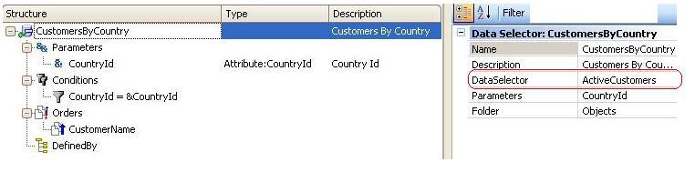

Data Selectors have the Data Selector property, which allows referencing another Data Selector. This allows you to nest Data Selectors in order to define restrictions that can be used separately or together. In the following example, we have defined two Data Selectors (one Data Selector that filters active customers, and another Data Selector that filters the customers that belong to a certain country received by parameter):  Note that the second Data Selector ("CustomersByCountry") references in its Data Selector property the first Data Selector ("ActiveCustomers"). In this way, when the second Data Selector is used, both filters are applied. This feature isn't implemented yet, so the following explanations are tentative: Composition of ParametersParameters aren't automatically composed. If a Data Selector references another Data Selector that has parameters, the parameters to be used must be specified in the reference. Thus, for example, in the Data Selector property the Data Selector called "TodayInvoices" might reference the "InvoicesByDate" Data Selector, which receives a date range (from and up to) as parameters, passing as parameter the &Today variable (or the Today() function). Note that, in this example, the "TodayInvoices" Data Selector doesn't receive any parameters but the "InvoicesByDate" Data Selector does receive them. Composition of ConditionsThis is the main objective of composing Data Selectors: Data Selector conditions are the sum of their conditions and those specified in the referenced Data Selector (recursively).Composition of OrdersOrders are not composed. In fact, orders specified in the referenced Data Selector are ignored in the result.Composition of Defined ByThe Defined By value is handled with a default scheme. If the referencing Data Selector has a Defined By, it is used in that result. If it doesn't have one, it inherits the Defined By value of the referenced Data Selector. |